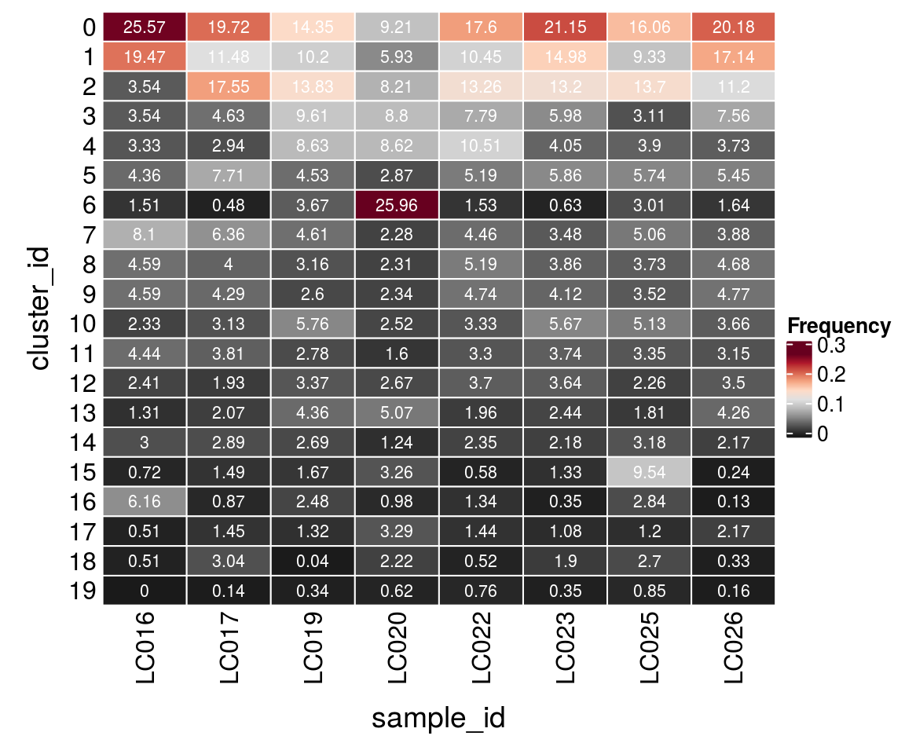
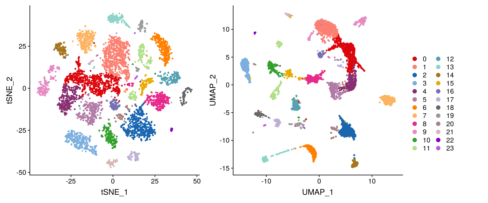

Cluster annotation
Pierre-Luc Germain
Institute for Molecular Life Sciences, University of Zurich, SwitzerlandHelena L. Crowell
Institute for Molecular Life Sciences, University of Zurich, SwitzerlandJuly 16, 2019
Last updated: 2019-07-16
Checks: 5 2
Knit directory: MAGL/
This reproducible R Markdown analysis was created with workflowr (version 1.4.0). The Checks tab describes the reproducibility checks that were applied when the results were created. The Past versions tab lists the development history.
The R Markdown file has unstaged changes. To know which version of the R Markdown file created these results, you’ll want to first commit it to the Git repo. If you’re still working on the analysis, you can ignore this warning. When you’re finished, you can run wflow_publish to commit the R Markdown file and build the HTML.
The global environment had objects present when the code in the R Markdown file was run. These objects can affect the analysis in your R Markdown file in unknown ways. For reproduciblity it’s best to always run the code in an empty environment. Use wflow_publish or wflow_build to ensure that the code is always run in an empty environment.
The following objects were defined in the global environment when these results were created:
| Name | Class | Size |
|---|---|---|
| data | environment | 56 bytes |
| env | environment | 56 bytes |
The command set.seed(20190311) was run prior to running the code in the R Markdown file. Setting a seed ensures that any results that rely on randomness, e.g. subsampling or permutations, are reproducible.
Great job! Recording the operating system, R version, and package versions is critical for reproducibility.
Nice! There were no cached chunks for this analysis, so you can be confident that you successfully produced the results during this run.
Great job! Using relative paths to the files within your workflowr project makes it easier to run your code on other machines.
Great! You are using Git for version control. Tracking code development and connecting the code version to the results is critical for reproducibility. The version displayed above was the version of the Git repository at the time these results were generated.
Note that you need to be careful to ensure that all relevant files for the analysis have been committed to Git prior to generating the results (you can use wflow_publish or wflow_git_commit). workflowr only checks the R Markdown file, but you know if there are other scripts or data files that it depends on. Below is the status of the Git repository when the results were generated:
Ignored files:
Ignored: .DS_Store
Ignored: ._.Renviron
Ignored: ._.gitignore
Ignored: ._README.md
Ignored: ._Snakefile
Ignored: ._config.yaml
Ignored: .snakemake/
Ignored: MAGL/.DS_Store
Ignored: MAGL/.RData
Ignored: MAGL/.Rhistory
Ignored: MAGL/._.DS_Store
Ignored: MAGL/._.Rprofile
Ignored: MAGL/._.gitignore
Ignored: MAGL/._data
Ignored: MAGL/analysis/._refs.bib
Ignored: MAGL/analysis/0-preprocessing_cache/
Ignored: MAGL/analysis/1-clustering_cache/
Ignored: MAGL/analysis/3-differential_cache/
Ignored: MAGL/analysis/4-visualization_cache/
Ignored: MAGL/analysis/5-geneset_cache/
Ignored: MAGL/analysis/6-more_cache/
Ignored: MAGL/analysis/figure/
Ignored: MAGL/code/._utils.R
Ignored: MAGL/data/
Ignored: MAGL/output/
Ignored: data/
Ignored: figures/
Ignored: meta/
Ignored: results/
Ignored: scripts/.DS_Store
Ignored: scripts/._.DS_Store
Ignored: scripts/._apply_scdd.R
Ignored: scripts/._plot_perf_by_expr.R
Ignored: scripts/._plot_perf_by_lfc.R
Ignored: scripts/._plot_perf_by_ss.R
Ignored: scripts/._plot_runtimes.R
Ignored: scripts/._plot_sim_ex.R
Ignored: scripts/._prep_data.R
Ignored: scripts/._prep_magl.R
Ignored: scripts/._prep_sim.R
Ignored: scripts/._sim_qc.R
Ignored: scripts/._utils.R
Untracked files:
Untracked: .RData
Untracked: .RDataTmp
Untracked: .Rhistory
Untracked: MAGL/code/utils.R
Untracked: MAGL/current
Untracked: figs/
Unstaged changes:
Modified: MAGL/.Rprofile
Modified: MAGL/analysis/2-annotation.Rmd
Modified: MAGL/analysis/3-differential.Rmd
Deleted: scripts/fig_vehicle_vs_lps.R
Note that any generated files, e.g. HTML, png, CSS, etc., are not included in this status report because it is ok for generated content to have uncommitted changes.
These are the previous versions of the R Markdown and HTML files. If you’ve configured a remote Git repository (see ?wflow_git_remote), click on the hyperlinks in the table below to view them.
| File | Version | Author | Date | Message |
|---|---|---|---|---|
| Rmd | 244411f | HelenaLC | 2019-07-11 | update lps analysis to include removal of doublets |
| html | 244411f | HelenaLC | 2019-07-11 | update lps analysis to include removal of doublets |
| Rmd | 5e2e38d | HelenaLC | 2019-05-20 | resolve merge conflicts |
| Rmd | 2e6c8b3 | HelenaLC | 2019-05-20 | update |
| Rmd | 61c0b06 | HelenaLC | 2019-05-20 | update |
| html | 3c5aa5f | HelenaLC | 2019-05-03 | add MAGL prepro,clust,anno |
| Rmd | 10c7525 | HelenaLC | 2019-05-03 | add MAGL prepro,clust,anno |
| Rmd | eaed7ec | HelenaLC | 2019-03-11 | initial commit |
Load packages
library(ComplexHeatmap)
library(cowplot)
library(ggplot2)
library(dplyr)
library(purrr)
library(RColorBrewer)
library(viridis)
library(scran)
library(Seurat)
library(SingleCellExperiment)Load data & convert to SCE
so <- readRDS(file.path("output", "MAGL-SeuratObject.rds"))
sce <- as.SingleCellExperiment(so, assay = "RNA")
colData(sce) <- as.data.frame(colData(sce)) %>%
mutate_if(is.character, as.factor) %>%
DataFrame(row.names = colnames(sce))Nb. of clusters by resolution
cluster_cols <- grep("res.[0-9]", colnames(colData(sce)), value = TRUE)
sapply(colData(sce)[cluster_cols], nlevels)integrated_snn_res.0.1 integrated_snn_res.0.2 integrated_snn_res.0.4
20 21 28
integrated_snn_res.0.8 integrated_snn_res.1 integrated_snn_res.1.2
33 35 38
integrated_snn_res.2
48 Cluster-sample counts
# set cluster IDs to resolution 0.2 clustering
so <- SetIdent(so, value = "integrated_snn_res.0.1")
so@meta.data$cluster_id <- Idents(so)
sce$cluster_id <- Idents(so)
(n_cells <- table(sce$cluster_id, sce$sample_id))
LC016 LC017 LC019 LC020 LC022 LC023 LC025 LC026
0 997 409 336 311 576 668 470 910
1 759 238 239 200 342 473 273 773
2 138 364 324 277 434 417 401 505
3 138 96 225 297 255 189 91 341
4 130 61 202 291 344 128 114 168
5 170 160 106 97 170 185 168 246
6 59 10 86 876 50 20 88 74
7 316 132 108 77 146 110 148 175
8 179 83 74 78 170 122 109 211
9 179 89 61 79 155 130 103 215
10 91 65 135 85 109 179 150 165
11 173 79 65 54 108 118 98 142
12 94 40 79 90 121 115 66 158
13 51 43 102 171 64 77 53 192
14 117 60 63 42 77 69 93 98
15 28 31 39 110 19 42 279 11
16 240 18 58 33 44 11 83 6
17 20 30 31 111 47 34 35 98
18 20 63 1 75 17 60 79 15
19 0 3 8 21 25 11 25 7nk <- length(kids <- set_names(levels(sce$cluster_id)))
ns <- length(sids <- set_names(levels(sce$sample_id)))
ng <- length(gids <- set_names(levels(sce$group_id)))
# color palettes for cluster, sample, group IDs, and # cells
pal <- CATALYST:::.cluster_cols
cluster_id_pal <- set_names(pal[seq_len(nk)], kids)
sample_id_pal <- set_names(pal[seq_len(ns) + nk], sids)
group_id_pal <- set_names(c("royalblue", "orange"), gids)Relative cluster-abundances
fqs <- prop.table(n_cells, margin = 2)
mat <- as.matrix(unclass(fqs))
Heatmap(mat,
col = rev(brewer.pal(11, "RdGy")[-6]),
name = "Frequency",
cluster_rows = FALSE,
cluster_columns = FALSE,
row_names_side = "left",
row_title = "cluster_id",
column_title = "sample_id",
column_title_side = "bottom",
rect_gp = gpar(col = "white"),
cell_fun = function(i, j, x, y, width, height, fill)
grid.text(round(mat[j, i] * 100, 2), x = x, y = y,
gp = gpar(col = "white", fontsize = 8)))
| Version | Author | Date |
|---|---|---|
| 244411f | HelenaLC | 2019-07-11 |
DR colored by cluster ID
cs <- sample(colnames(so), 5e3)
.plot_dr <- function(so, dr, id)
DimPlot(so, cells = cs, group.by = id, reduction = dr, pt.size = 0.4) +
scale_color_manual(id, values = get(paste0(id, "_pal"))) +
guides(col = guide_legend(nrow = 10,
override.aes = list(size = 3, alpha = 1))) +
theme_void() + theme(aspect.ratio = 1)
ids <- c("cluster_id", "group_id", "sample_id")
for (id in ids) {
cat("## ", id, "\n")
p1 <- .plot_dr(so, "tsne", id)
lgd <- get_legend(p1)
p1 <- p1 + theme(legend.position = "none")
p2 <- .plot_dr(so, "umap", id) + theme(legend.position = "none")
ps <- plot_grid(plotlist = list(p1, p2), nrow = 1)
p <- plot_grid(ps, lgd, nrow = 1, rel_widths = c(1, 0.2))
print(p)
cat("\n\n")
}

Known marker genes
known_markers <- list(
astrocytes = c("Aqp4", "Gfap", "Fgfr3"),
endothelial = c("Cldn5","Nostrin"),
microglia = c("C1qb","Tyrobp"),
neuronal = c("Snap25", "Stmn2"),
neuronal_excitatory = "Slc17a7",
neuronal_inhibitory = "Gad1",
oligodendrocyte = "Opalin",
OPC = "Pdgfra")
known_markers <- lapply(known_markers, sapply, function(g)
grep(paste0(g, "$"), rownames(sce), value = TRUE))
gs <- gsub(".*\\.", "", unlist(known_markers))
ks <- rep.int(names(known_markers), vapply(known_markers, length, numeric(1)))
labs <- sprintf("%s(%s)", gs, ks)Heatmap of mean marker-exprs. by cluster
# split cells by cluster
cs_by_k <- split(colnames(sce), sce$cluster_id)
# compute cluster-marker means
means_by_cluster <- lapply(known_markers, function(gs)
vapply(cs_by_k, function(i)
Matrix::rowMeans(logcounts(sce)[gs, i, drop = FALSE]),
numeric(length(gs))))
# prep. for plotting & scale b/w 0 and 1
mat <- do.call("rbind", means_by_cluster)
mat <- muscat:::.scale(mat)Registered S3 methods overwritten by 'lme4':
method from
cooks.distance.influence.merMod car
influence.merMod car
dfbeta.influence.merMod car
dfbetas.influence.merMod car rownames(mat) <- gs
cols <- muscat:::.cluster_colors[seq_along(known_markers)]
cols <- setNames(cols, names(known_markers))
row_anno <- rowAnnotation(
df = data.frame(label = ks),
col = list(label = cols),
gp = gpar(col = "white"))
Heatmap(mat,
name = "scaled avg.\nexpression",
col = viridis(10),
cluster_rows = FALSE,
cluster_columns = FALSE,
row_names_side = "left",
column_title = "cluster_id",
column_title_side = "bottom",
rect_gp = gpar(col = "white"),
left_annotation = row_anno)
DR colored by marker expr.
# downsample to 2000 cells
cs <- sample(colnames(sce), 2e3)
gs <- unlist(known_markers)
sub <- subset(so, cells = cs)
# t-SNE colored by marker-expression
ps <- lapply(seq_along(gs), function(i) {
if (!gs[i] %in% rownames(so)) return(NULL)
FeaturePlot(sub, features = gs[i], reduction = "umap", pt.size = 0.4) +
ggtitle(labs[i]) + theme_void() + theme(aspect.ratio = 1, legend.position = "none")
})
ps <- ps[!sapply(ps, is.null)]
# arrange plots
plot_grid(plotlist = ps, ncol = 4, label_size = 10)
Find markers using scran
scran_markers <- findMarkers(sce,
clusters = sce$cluster_id, block = sce$sample_id,
direction = "up", lfc = 2, full.stats = TRUE)Heatmap of mean marker-exprs. by cluster
gs <- lapply(scran_markers, function(u) rownames(u)[u$Top == 1])
sapply(gs, length) 0 1 2 3 4 5 6 7 8 9 10 11 12 13 14 15 16 17 18 19
10 10 4 3 2 9 6 4 2 4 6 2 4 5 5 12 3 2 9 1 muscat::plotMarkerGenes(sce, gs)
Save SCE to .rds
saveRDS(sce, file.path("output", "MAGL-SCE.rds"))
sessionInfo()R version 3.6.0 (2019-04-26)
Platform: x86_64-pc-linux-gnu (64-bit)
Running under: Ubuntu 16.04.5 LTS
Matrix products: default
BLAS: /usr/local/R/R-3.6.0/lib/libRblas.so
LAPACK: /usr/local/R/R-3.6.0/lib/libRlapack.so
locale:
[1] LC_CTYPE=en_CA.UTF-8 LC_NUMERIC=C
[3] LC_TIME=en_CA.UTF-8 LC_COLLATE=en_CA.UTF-8
[5] LC_MONETARY=en_CA.UTF-8 LC_MESSAGES=en_CA.UTF-8
[7] LC_PAPER=en_CA.UTF-8 LC_NAME=C
[9] LC_ADDRESS=C LC_TELEPHONE=C
[11] LC_MEASUREMENT=en_CA.UTF-8 LC_IDENTIFICATION=C
attached base packages:
[1] parallel stats4 grid stats graphics grDevices utils
[8] datasets methods base
other attached packages:
[1] Seurat_3.0.2 scran_1.12.1
[3] SingleCellExperiment_1.6.0 SummarizedExperiment_1.14.0
[5] DelayedArray_0.10.0 BiocParallel_1.18.0
[7] matrixStats_0.54.0 Biobase_2.44.0
[9] GenomicRanges_1.36.0 GenomeInfoDb_1.20.0
[11] IRanges_2.18.1 S4Vectors_0.22.0
[13] BiocGenerics_0.30.0 viridis_0.5.1
[15] viridisLite_0.3.0 RColorBrewer_1.1-2
[17] purrr_0.3.2 dplyr_0.8.3
[19] ggplot2_3.2.0 cowplot_1.0.0
[21] ComplexHeatmap_2.0.0
loaded via a namespace (and not attached):
[1] R.methodsS3_1.7.1 tidyr_0.8.3
[3] bit64_0.9-7 acepack_1.4.1
[5] knitr_1.23 irlba_2.3.3
[7] multcomp_1.4-10 R.utils_2.9.0
[9] rpart_4.1-15 data.table_1.12.2
[11] doParallel_1.0.14 RCurl_1.95-4.12
[13] flowCore_1.50.0 metap_1.1
[15] TH.data_1.0-10 RSQLite_2.1.1
[17] RANN_2.6.1 future_1.14.0
[19] bit_1.1-14 httpuv_1.5.1
[21] assertthat_0.2.1 xfun_0.8
[23] hms_0.5.0 evaluate_0.14
[25] promises_1.0.1 progress_1.2.2
[27] DEoptimR_1.0-8 caTools_1.17.1.2
[29] readxl_1.3.1 geneplotter_1.62.0
[31] DBI_1.0.0 igraph_1.2.4.1
[33] CATALYST_1.8.5 htmlwidgets_1.3
[35] backports_1.1.4 annotate_1.62.0
[37] gbRd_0.4-11 vctrs_0.2.0
[39] ROCR_1.0-7 abind_1.4-5
[41] withr_2.1.2 grr_0.9.5
[43] robustbase_0.93-5 checkmate_1.9.4
[45] sctransform_0.2.0 prettyunits_1.0.2
[47] cluster_2.1.0 ape_5.3
[49] lazyeval_0.2.2 crayon_1.3.4
[51] drc_3.0-1 genefilter_1.66.0
[53] edgeR_3.26.5 pkgconfig_2.0.2
[55] labeling_0.3 nlme_3.1-140
[57] vipor_0.4.5 nnet_7.3-12
[59] blme_1.0-4 rlang_0.4.0
[61] globals_0.12.4 sandwich_2.5-1
[63] rsvd_1.0.1 cellranger_1.1.0
[65] rprojroot_1.3-2 lmtest_0.9-37
[67] graph_1.62.0 Matrix_1.2-17
[69] carData_3.0-2 Matrix.utils_0.9.7
[71] boot_1.3-23 zoo_1.8-6
[73] base64enc_0.1-3 beeswarm_0.2.3
[75] whisker_0.3-2 ggridges_0.5.1
[77] GlobalOptions_0.1.0 png_0.1-7
[79] rjson_0.2.20 bitops_1.0-6
[81] shinydashboard_0.7.1 R.oo_1.22.0
[83] ConsensusClusterPlus_1.48.0 KernSmooth_2.23-15
[85] blob_1.2.0 DelayedMatrixStats_1.6.0
[87] workflowr_1.4.0 shape_1.4.4
[89] stringr_1.4.0 scales_1.0.0
[91] memoise_1.1.0 magrittr_1.5
[93] plyr_1.8.4 ica_1.0-2
[95] gplots_3.0.1.1 bibtex_0.4.2
[97] gdata_2.18.0 zlibbioc_1.30.0
[99] compiler_3.6.0 lsei_1.2-0
[101] dqrng_0.2.1 plotrix_3.7-6
[103] clue_0.3-57 lme4_1.1-21
[105] DESeq2_1.24.0 rrcov_1.4-7
[107] fitdistrplus_1.0-14 XVector_0.24.0
[109] lmerTest_3.1-0 listenv_0.7.0
[111] pbapply_1.4-1 TMB_1.7.15
[113] htmlTable_1.13.1 Formula_1.2-3
[115] FlowSOM_1.16.0 MASS_7.3-51.4
[117] tidyselect_0.2.5 stringi_1.4.3
[119] forcats_0.4.0 shinyBS_0.61
[121] highr_0.8 yaml_2.2.0
[123] BiocSingular_1.0.0 locfit_1.5-9.1
[125] latticeExtra_0.6-28 ggrepel_0.8.1
[127] muscat_0.99.10 tools_3.6.0
[129] future.apply_1.3.0 rio_0.5.16
[131] rstudioapi_0.10 circlize_0.4.6
[133] foreach_1.4.4 foreign_0.8-71
[135] git2r_0.26.1 gridExtra_2.3
[137] Rtsne_0.15 digest_0.6.20
[139] shiny_1.3.2 Rcpp_1.0.1
[141] car_3.0-3 SDMTools_1.1-221.1
[143] later_0.8.0 AnnotationDbi_1.46.0
[145] httr_1.4.0 npsurv_0.4-0
[147] Rdpack_0.11-0 colorspace_1.4-1
[149] XML_3.98-1.20 fs_1.3.1
[151] reticulate_1.12 splines_3.6.0
[153] statmod_1.4.32 scater_1.12.2
[155] plotly_4.9.0 xtable_1.8-4
[157] jsonlite_1.6 nloptr_1.2.1
[159] dynamicTreeCut_1.63-1 corpcor_1.6.9
[161] zeallot_0.1.0 R6_2.4.0
[163] Hmisc_4.2-0 pillar_1.4.2
[165] htmltools_0.3.6 mime_0.7
[167] nnls_1.4 glue_1.3.1
[169] minqa_1.2.4 DT_0.7
[171] BiocNeighbors_1.2.0 codetools_0.2-16
[173] tsne_0.1-3 pcaPP_1.9-73
[175] mvtnorm_1.0-11 lattice_0.20-38
[177] tibble_2.1.3 pbkrtest_0.4-7
[179] numDeriv_2016.8-1.1 curl_3.3
[181] ggbeeswarm_0.6.0 colorRamps_2.3
[183] gtools_3.8.1 zip_2.0.3
[185] shinyjs_1.0 openxlsx_4.1.0.1
[187] survival_2.44-1.1 limma_3.40.2
[189] glmmTMB_0.2.3 rmarkdown_1.14
[191] munsell_0.5.0 GetoptLong_0.1.7
[193] GenomeInfoDbData_1.2.1 iterators_1.0.10
[195] variancePartition_1.14.0 haven_2.1.1
[197] reshape2_1.4.3 gtable_0.3.0